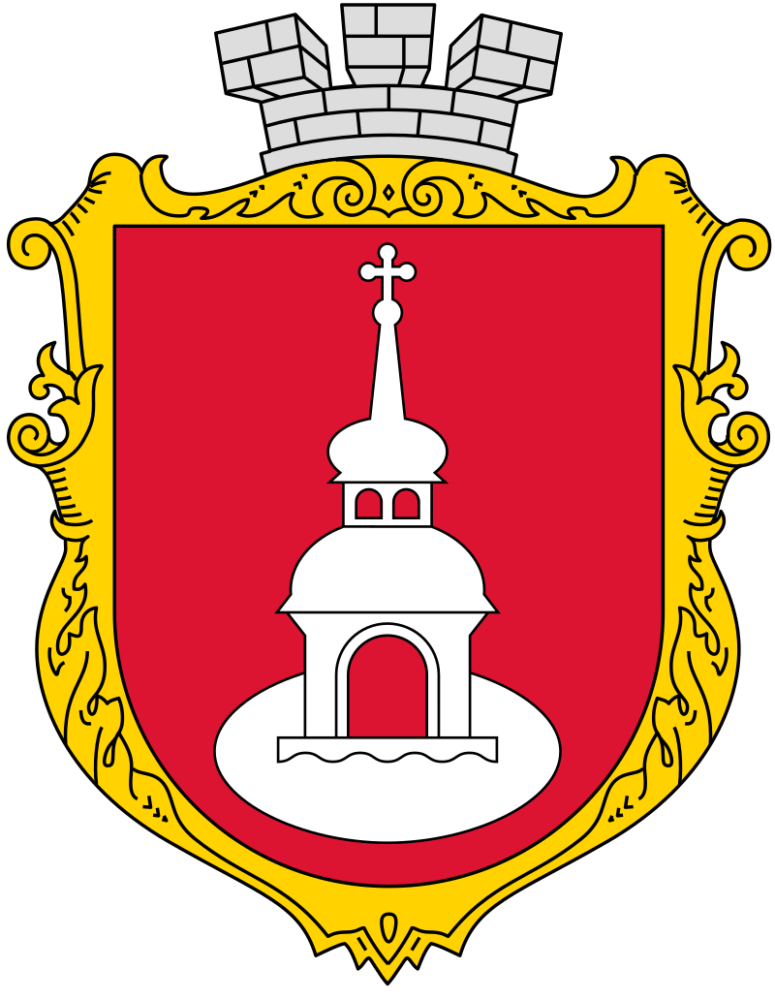
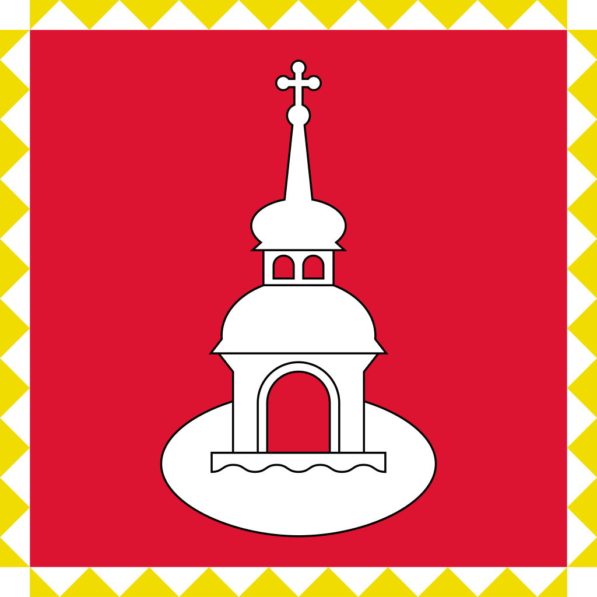

Visitez l'oblast de Kiev - Pereyaslav
Visitez l'oblast de Kiev - Pereyaslav

Héraldique

Drapeau
la description de la ville
Pereïaslav est une ville de l'oblast de Kiev, en Ukraine. Sa population s'élevait à 27 945 habitants en 2013.
Pereïaslav est située à proximité du réservoir de Kaniv sur le Dniepr et à 77 km au sud-est de Kiev.
Les endroits à visiter
- Polovtsiennes
- Monastère de l'Ascension


Gallerie